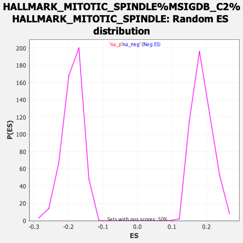

| | | Dataset | tel_exp_collapsed |
| Phenotype | NoPhenotypeAvailable |
| Upregulated in class | na_neg |
| GeneSet | HALLMARK_MITOTIC_SPINDLE%MSIGDB_C2%HALLMARK_MITOTIC_SPINDLE |
| Enrichment Score (ES) | -0.4872012 |
| Normalized Enrichment Score (NES) | -2.6006877 |
| Nominal p-value | 0.0 |
| FDR q-value | 0.0 |
| FWER p-Value | 0.0 |
Table: GSEA Results Summary
 Fig 1: Enrichment plot: HALLMARK_MITOTIC_SPINDLE%MSIGDB_C2%HALLMARK_MITOTIC_SPINDLE
Fig 1: Enrichment plot: HALLMARK_MITOTIC_SPINDLE%MSIGDB_C2%HALLMARK_MITOTIC_SPINDLE
Profile of the Running ES Score & Positions of GeneSet Members on the Rank Ordered List
| PROBE | GENE SYMBOL | GENE_TITLE | RANK IN GENE LIST | RANK METRIC SCORE | RUNNING ES | CORE ENRICHMENT | | 1 | YWHAE | | | 256 | 13.820 | -0.0070 | No |
| 2 | FLNA | | | 659 | 11.626 | -0.0256 | No |
| 3 | ARHGDIA | | | 1149 | 10.211 | -0.0512 | No |
| 4 | SHROOM2 | | | 1406 | 9.584 | -0.0613 | No |
| 5 | LRPPRC | | | 1723 | 8.906 | -0.0761 | No |
| 6 | FSCN1 | | | 1969 | 8.509 | -0.0864 | No |
| 7 | DYNC1H1 | | | 2062 | 8.350 | -0.0864 | No |
| 8 | CAPZB | | | 2097 | 8.282 | -0.0824 | No |
| 9 | KIF1B | | | 2241 | 8.064 | -0.0861 | No |
| 10 | MID1IP1 | | | 2373 | 7.853 | -0.0891 | No |
| 11 | ARHGAP5 | | | 2439 | 7.770 | -0.0877 | No |
| 12 | SPTAN1 | | | 2745 | 7.331 | -0.1029 | No |
| 13 | UXT | | | 2870 | 7.156 | -0.1059 | No |
| 14 | TUBGCP2 | | | 2904 | 7.103 | -0.1028 | No |
| 15 | FARP1 | | | 3579 | 6.076 | -0.1441 | No |
| 16 | ARFIP2 | | | 3610 | 6.027 | -0.1416 | No |
| 17 | PLEKHG2 | | | 3611 | 6.026 | -0.1370 | No |
| 18 | CEP192 | | | 3973 | 5.471 | -0.1575 | No |
| 19 | ARF6 | | | 4131 | 5.191 | -0.1642 | No |
| 20 | BIN1 | | | 4396 | 4.741 | -0.1786 | No |
| 21 | MAP1S | | | 4414 | 4.720 | -0.1762 | No |
| 22 | CTTN | | | 4653 | 4.319 | -0.1892 | No |
| 23 | MYH9 | | | 4692 | 4.247 | -0.1886 | No |
| 24 | ACTN4 | | | 4798 | 4.021 | -0.1927 | No |
| 25 | GSN | | | 4877 | 3.871 | -0.1951 | No |
| 26 | KPTN | | | 4984 | 3.704 | -0.1995 | No |
| 27 | ALMS1 | | | 4989 | 3.700 | -0.1970 | No |
| 28 | PXN | | | 5009 | 3.670 | -0.1955 | No |
| 29 | DST | | | 5063 | 3.570 | -0.1964 | No |
| 30 | BCR | | | 5118 | 3.450 | -0.1975 | No |
| 31 | EPB41L2 | | | 5134 | 3.428 | -0.1959 | No |
| 32 | NEDD9 | | | 5139 | 3.416 | -0.1936 | No |
| 33 | SMC3 | | | 5149 | 3.398 | -0.1917 | No |
| 34 | MAP3K11 | | | 5363 | 2.963 | -0.2039 | No |
| 35 | SEPT9 | | | 5469 | 2.756 | -0.2090 | No |
| 36 | KIF3C | | | 5559 | 2.608 | -0.2131 | No |
| 37 | KIFAP3 | | | 5729 | 2.315 | -0.2228 | No |
| 38 | BCL2L11 | | | 5831 | 2.114 | -0.2281 | No |
| 39 | EPB41 | | | 6021 | 1.787 | -0.2396 | No |
| 40 | MARCKS | | | 6031 | 1.750 | -0.2389 | No |
| 41 | ARHGAP4 | | | 6044 | 1.730 | -0.2384 | No |
| 42 | SPTBN1 | | | 6411 | 1.160 | -0.2624 | No |
| 43 | CYTH2 | | | 6546 | 0.944 | -0.2708 | No |
| 44 | RANBP9 | | | 6555 | 0.931 | -0.2707 | No |
| 45 | ABR | | | 6631 | 0.816 | -0.2752 | No |
| 46 | FLNB | | | 6674 | 0.759 | -0.2775 | No |
| 47 | PALLD | | | 6701 | 0.727 | -0.2787 | No |
| 48 | WASF1 | | | 6879 | 0.500 | -0.2903 | No |
| 49 | CEP131 | | | 6883 | 0.494 | -0.2902 | No |
| 50 | STAU1 | | | 7062 | 0.299 | -0.3020 | No |
| 51 | ARHGAP10 | | | 7081 | 0.281 | -0.3031 | No |
| 52 | PCM1 | | | 7096 | 0.263 | -0.3038 | No |
| 53 | TBCD | | | 7143 | 0.223 | -0.3068 | No |
| 54 | ARHGEF12 | | | 7184 | 0.186 | -0.3093 | No |
| 55 | KATNB1 | | | 7319 | 0.063 | -0.3184 | No |
| 56 | PREX1 | | | 7659 | -0.191 | -0.3413 | No |
| 57 | SMC1A | | | 7951 | -0.479 | -0.3607 | No |
| 58 | TUBA4A | | | 8181 | -0.798 | -0.3757 | No |
| 59 | ABI1 | | | 8201 | -0.831 | -0.3764 | No |
| 60 | MYH10 | | | 8272 | -0.932 | -0.3804 | No |
| 61 | NCK2 | | | 8313 | -0.992 | -0.3824 | No |
| 62 | FGD6 | | | 8470 | -1.241 | -0.3921 | No |
| 63 | LLGL1 | | | 8513 | -1.320 | -0.3940 | No |
| 64 | KATNA1 | | | 8517 | -1.326 | -0.3932 | No |
| 65 | VCL | | | 8572 | -1.396 | -0.3958 | No |
| 66 | MARK4 | | | 8639 | -1.494 | -0.3991 | No |
| 67 | NF1 | | | 8657 | -1.524 | -0.3991 | No |
| 68 | CEP72 | | | 8737 | -1.649 | -0.4033 | No |
| 69 | TUBGCP5 | | | 8763 | -1.688 | -0.4037 | No |
| 70 | CDC42BPA | | | 9143 | -2.368 | -0.4277 | No |
| 71 | CNTROB | | | 9355 | -2.764 | -0.4400 | No |
| 72 | TLK1 | | | 9397 | -2.836 | -0.4406 | No |
| 73 | CLIP1 | | | 9422 | -2.886 | -0.4401 | No |
| 74 | HOOK3 | | | 9457 | -2.941 | -0.4402 | No |
| 75 | HDAC6 | | | 9510 | -3.037 | -0.4414 | No |
| 76 | CDK5RAP2 | | | 9512 | -3.040 | -0.4392 | No |
| 77 | ARHGAP27 | | | 9572 | -3.147 | -0.4408 | No |
| 78 | CDC42 | | | 9577 | -3.152 | -0.4387 | No |
| 79 | DOCK4 | | | 9578 | -3.154 | -0.4364 | No |
| 80 | SHROOM1 | | | 9700 | -3.409 | -0.4420 | No |
| 81 | CDC42EP1 | | | 9701 | -3.410 | -0.4395 | No |
| 82 | CLIP2 | | | 9821 | -3.613 | -0.4448 | No |
| 83 | ROCK1 | | | 9935 | -3.806 | -0.4497 | No |
| 84 | RHOF | | | 9976 | -3.897 | -0.4494 | No |
| 85 | RAPGEF6 | | | 10024 | -3.995 | -0.4496 | No |
| 86 | PDLIM5 | | | 10292 | -4.431 | -0.4645 | No |
| 87 | BCAR1 | | | 10409 | -4.639 | -0.4689 | No |
| 88 | RALBP1 | | | 10424 | -4.668 | -0.4663 | No |
| 89 | MYO9B | | | 10425 | -4.672 | -0.4628 | No |
| 90 | ARFGEF1 | | | 10676 | -5.111 | -0.4759 | No |
| 91 | KLC1 | | | 10692 | -5.127 | -0.4731 | No |
| 92 | TUBGCP3 | | | 10823 | -5.334 | -0.4779 | No |
| 93 | CEP57 | | | 10957 | -5.547 | -0.4828 | No |
| 94 | KIF4A | | | 11023 | -5.652 | -0.4829 | Yes |
| 95 | TRIO | | | 11024 | -5.652 | -0.4787 | Yes |
| 96 | CENPJ | | | 11080 | -5.776 | -0.4781 | Yes |
| 97 | CCDC88A | | | 11109 | -5.833 | -0.4756 | Yes |
| 98 | SORBS2 | | | 11157 | -5.935 | -0.4743 | Yes |
| 99 | RASA1 | | | 11160 | -5.937 | -0.4700 | Yes |
| 100 | MAPRE1 | | | 11203 | -6.033 | -0.4683 | Yes |
| 101 | ARHGEF11 | | | 11271 | -6.138 | -0.4682 | Yes |
| 102 | ITSN1 | | | 11285 | -6.161 | -0.4645 | Yes |
| 103 | WASF2 | | | 11299 | -6.172 | -0.4607 | Yes |
| 104 | KIF22 | | | 11308 | -6.189 | -0.4566 | Yes |
| 105 | OPHN1 | | | 11313 | -6.194 | -0.4522 | Yes |
| 106 | FGD4 | | | 11360 | -6.262 | -0.4506 | Yes |
| 107 | KNTC1 | | | 11477 | -6.472 | -0.4537 | Yes |
| 108 | ALS2 | | | 11521 | -6.559 | -0.4516 | Yes |
| 109 | RFC1 | | | 11542 | -6.602 | -0.4480 | Yes |
| 110 | SAC3D1 | | | 11594 | -6.714 | -0.4465 | Yes |
| 111 | PCGF5 | | | 11617 | -6.743 | -0.4429 | Yes |
| 112 | CKAP5 | | | 11667 | -6.809 | -0.4411 | Yes |
| 113 | ARAP3 | | | 11710 | -6.904 | -0.4387 | Yes |
| 114 | PAFAH1B1 | | | 11718 | -6.917 | -0.4340 | Yes |
| 115 | ARHGEF3 | | | 11739 | -6.955 | -0.4301 | Yes |
| 116 | NIN | | | 11819 | -7.094 | -0.4302 | Yes |
| 117 | PCNT | | | 11908 | -7.248 | -0.4307 | Yes |
| 118 | RAB3GAP1 | | | 12004 | -7.412 | -0.4316 | Yes |
| 119 | RASAL2 | | | 12238 | -7.792 | -0.4416 | Yes |
| 120 | LATS1 | | | 12241 | -7.792 | -0.4358 | Yes |
| 121 | ATG4B | | | 12346 | -7.967 | -0.4369 | Yes |
| 122 | CLASP1 | | | 12356 | -7.980 | -0.4315 | Yes |
| 123 | STK38L | | | 12391 | -8.035 | -0.4278 | Yes |
| 124 | LMNB1 | | | 12432 | -8.087 | -0.4244 | Yes |
| 125 | CCNB2 | | | 12439 | -8.091 | -0.4187 | Yes |
| 126 | TUBGCP6 | | | 12441 | -8.093 | -0.4127 | Yes |
| 127 | DYNLL2 | | | 12629 | -8.416 | -0.4191 | Yes |
| 128 | ABL1 | | | 12672 | -8.500 | -0.4155 | Yes |
| 129 | SSH2 | | | 12733 | -8.607 | -0.4131 | Yes |
| 130 | CSNK1D | | | 12773 | -8.678 | -0.4093 | Yes |
| 131 | NEK2 | | | 12775 | -8.683 | -0.4028 | Yes |
| 132 | ARHGEF7 | | | 12851 | -8.809 | -0.4013 | Yes |
| 133 | KIF5B | | | 12922 | -8.940 | -0.3993 | Yes |
| 134 | EZR | | | 12967 | -9.023 | -0.3955 | Yes |
| 135 | ARHGAP29 | | | 12988 | -9.059 | -0.3900 | Yes |
| 136 | APC | | | 13055 | -9.177 | -0.3876 | Yes |
| 137 | NOTCH2 | | | 13095 | -9.231 | -0.3833 | Yes |
| 138 | SYNPO | | | 13117 | -9.251 | -0.3778 | Yes |
| 139 | SOS1 | | | 13132 | -9.280 | -0.3718 | Yes |
| 140 | AKAP13 | | | 13160 | -9.325 | -0.3666 | Yes |
| 141 | BIRC5 | | | 13253 | -9.494 | -0.3657 | Yes |
| 142 | ESPL1 | | | 13262 | -9.507 | -0.3591 | Yes |
| 143 | RHOT2 | | | 13267 | -9.513 | -0.3522 | Yes |
| 144 | BUB1 | | | 13305 | -9.578 | -0.3475 | Yes |
| 145 | TSC1 | | | 13354 | -9.688 | -0.3435 | Yes |
| 146 | SMC4 | | | 13365 | -9.704 | -0.3368 | Yes |
| 147 | DLG1 | | | 13393 | -9.765 | -0.3313 | Yes |
| 148 | PKD2 | | | 13409 | -9.791 | -0.3250 | Yes |
| 149 | WASL | | | 13426 | -9.854 | -0.3187 | Yes |
| 150 | BRCA2 | | | 13447 | -9.896 | -0.3126 | Yes |
| 151 | NCK1 | | | 13481 | -9.954 | -0.3073 | Yes |
| 152 | PLK1 | | | 13494 | -9.987 | -0.3006 | Yes |
| 153 | ARL8A | | | 13552 | -10.079 | -0.2969 | Yes |
| 154 | ARHGEF2 | | | 13649 | -10.224 | -0.2957 | Yes |
| 155 | KIF15 | | | 13687 | -10.286 | -0.2905 | Yes |
| 156 | NUMA1 | | | 13690 | -10.291 | -0.2829 | Yes |
| 157 | MID1 | | | 13734 | -10.391 | -0.2780 | Yes |
| 158 | CEP250 | | | 13744 | -10.408 | -0.2708 | Yes |
| 159 | MYO1E | | | 13761 | -10.435 | -0.2640 | Yes |
| 160 | CD2AP | | | 13774 | -10.462 | -0.2570 | Yes |
| 161 | KIF3B | | | 13848 | -10.645 | -0.2539 | Yes |
| 162 | TUBD1 | | | 13893 | -10.735 | -0.2488 | Yes |
| 163 | RASA2 | | | 13894 | -10.735 | -0.2408 | Yes |
| 164 | RABGAP1 | | | 13901 | -10.752 | -0.2331 | Yes |
| 165 | TPX2 | | | 14053 | -11.080 | -0.2350 | Yes |
| 166 | GEMIN4 | | | 14106 | -11.218 | -0.2301 | Yes |
| 167 | NDC80 | | | 14132 | -11.276 | -0.2233 | Yes |
| 168 | DLGAP5 | | | 14140 | -11.295 | -0.2153 | Yes |
| 169 | CNTRL | | | 14154 | -11.321 | -0.2076 | Yes |
| 170 | ECT2 | | | 14198 | -11.427 | -0.2020 | Yes |
| 171 | FBXO5 | | | 14226 | -11.511 | -0.1951 | Yes |
| 172 | CDC27 | | | 14262 | -11.595 | -0.1888 | Yes |
| 173 | NET1 | | | 14304 | -11.718 | -0.1828 | Yes |
| 174 | RACGAP1 | | | 14377 | -11.933 | -0.1787 | Yes |
| 175 | PPP4R2 | | | 14390 | -11.976 | -0.1705 | Yes |
| 176 | PRC1 | | | 14435 | -12.110 | -0.1644 | Yes |
| 177 | TTK | | | 14499 | -12.287 | -0.1594 | Yes |
| 178 | CDC42EP4 | | | 14543 | -12.416 | -0.1530 | Yes |
| 179 | RICTOR | | | 14546 | -12.421 | -0.1438 | Yes |
| 180 | CENPF | | | 14561 | -12.477 | -0.1353 | Yes |
| 181 | CENPE | | | 14576 | -12.526 | -0.1268 | Yes |
| 182 | CDC42EP2 | | | 14596 | -12.597 | -0.1187 | Yes |
| 183 | NUSAP1 | | | 14667 | -13.000 | -0.1136 | Yes |
| 184 | KIF20B | | | 14674 | -13.038 | -0.1042 | Yes |
| 185 | SASS6 | | | 14723 | -13.399 | -0.0974 | Yes |
| 186 | ANLN | | | 14760 | -13.552 | -0.0897 | Yes |
| 187 | TAOK2 | | | 14762 | -13.564 | -0.0795 | Yes |
| 188 | AURKA | | | 14782 | -13.714 | -0.0705 | Yes |
| 189 | KIF11 | | | 14789 | -13.791 | -0.0605 | Yes |
| 190 | CDK1 | | | 14800 | -13.907 | -0.0507 | Yes |
| 191 | INCENP | | | 14801 | -13.927 | -0.0402 | Yes |
| 192 | SUN2 | | | 14865 | -14.787 | -0.0334 | Yes |
| 193 | PIF1 | | | 14871 | -14.996 | -0.0225 | Yes |
| 194 | TOP2A | | | 14897 | -15.957 | -0.0121 | Yes |
| 195 | KIF2C | | | 14900 | -16.409 | 0.0001 | Yes |
Table: GSEA details [plain text format]

Fig 2: HALLMARK_MITOTIC_SPINDLE%MSIGDB_C2%HALLMARK_MITOTIC_SPINDLE: Random ES distribution
Gene set null distribution of ES for HALLMARK_MITOTIC_SPINDLE%MSIGDB_C2%HALLMARK_MITOTIC_SPINDLE